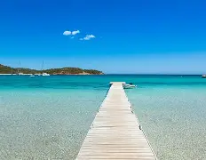
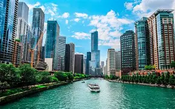
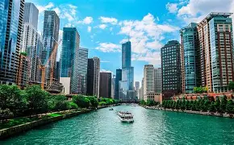
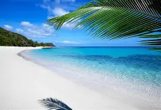
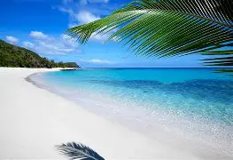
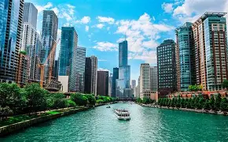
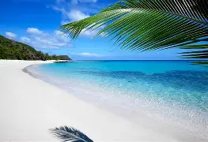

Mes destinations favorites
Tropical
City break
Montagne
Slow travel
Coup de cœur
Plage de Bali, Indonésie
Bali, c’est l’île où chaque journée commence avec une lumière dorée qui se reflète sur le sable fin. Ses plages sont toutes différentes : Seminyak pour l’ambiance chic, Kuta pour apprendre le surf, Uluwatu pour ses falaises majestueuses.
Mais Bali, c’est aussi des temples perchés, des cérémonies colorées, des marchés parfumés, des rizières en terrasses classées à l’UNESCO. L’île a cette magie qui te fait sentir chez toi tout en étant à l’autre bout du monde. Entre massages balinais, plages secrètes et paysages volcaniques, Bali est un voyage qui marque profondément."> Amsterdam, Pays-Bas
Amsterdam, Pays-Bas
Amsterdam se vit au rythme tranquille de ses canaux et de ses vélos colorés. Chaque rue semble sortie d’un tableau : maisons étroites, cafés chaleureux, fleurs aux fenêtres.
Tu peux flâner le long de l’eau, explorer des musées iconiques comme le Rijksmuseum ou la Maison d’Anne Frank, ou prendre un bateau au coucher du soleil pour admirer les ponts illuminés. Une ville douce, romantique, culturelle et profondément dépaysante.">
 Les Maldives
Les Maldives
Les Maldives sont l’image parfaite du paradis : eau turquoise transparente, sable blanc, poissons multicolores. Les bungalows sur l’eau permettent de se réveiller avec le bruit des vagues et de plonger directement depuis la terrasse.
Au-delà du luxe, l’archipel offre une nature protégée, une sérénité absolue et des couchers de soleil spectaculaires. Une destination pour les amoureux de la mer, de la détente et de la beauté pure.">
Bali, c’est l’île où chaque journée commence avec une lumière dorée qui se reflète sur le sable fin. Ses plages sont toutes différentes : Seminyak pour l’ambiance chic, Kuta pour apprendre le surf, Uluwatu pour ses falaises majestueuses.
Mais Bali, c’est aussi des temples perchés, des cérémonies colorées, des marchés parfumés, des rizières en terrasses classées à l’UNESCO. L’île a cette magie qui te fait sentir chez toi tout en étant à l’autre bout du monde. Entre massages balinais, plages secrètes et paysages volcaniques, Bali est un voyage qui marque profondément.">
Amsterdam, Pays-BasAmsterdam se vit au rythme tranquille de ses canaux et de ses vélos colorés. Chaque rue semble sortie d’un tableau : maisons étroites, cafés chaleureux, fleurs aux fenêtres.
Tu peux flâner le long de l’eau, explorer des musées iconiques comme le Rijksmuseum ou la Maison d’Anne Frank, ou prendre un bateau au coucher du soleil pour admirer les ponts illuminés. Une ville douce, romantique, culturelle et profondément dépaysante.">
Les MaldivesLes Maldives sont l’image parfaite du paradis : eau turquoise transparente, sable blanc, poissons multicolores. Les bungalows sur l’eau permettent de se réveiller avec le bruit des vagues et de plonger directement depuis la terrasse.
Au-delà du luxe, l’archipel offre une nature protégée, une sérénité absolue et des couchers de soleil spectaculaires. Une destination pour les amoureux de la mer, de la détente et de la beauté pure.">
GUIDES EXPRESS
Fiches pratiques prêtes à partir
- Itinéraires jour par jour (PDF)
- Budget détaillé et bons plans transport
- Adresses locales : cafés, rooftops, spots photo
INSPIRATIONS
Destinations par ambiance
Plages & plongée
Philippines · Polynésie · Zanzibar
Villes créatives
Lisbonne · Montréal · Séoul
Grande nature
Patagonie · Islande · Dolomites